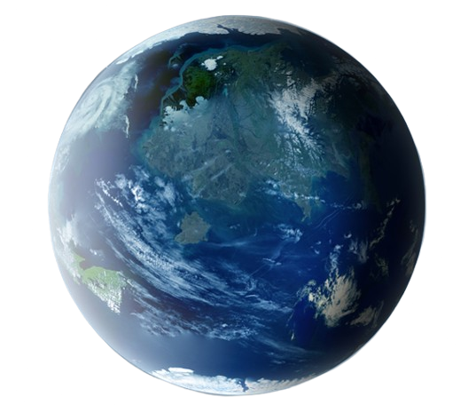
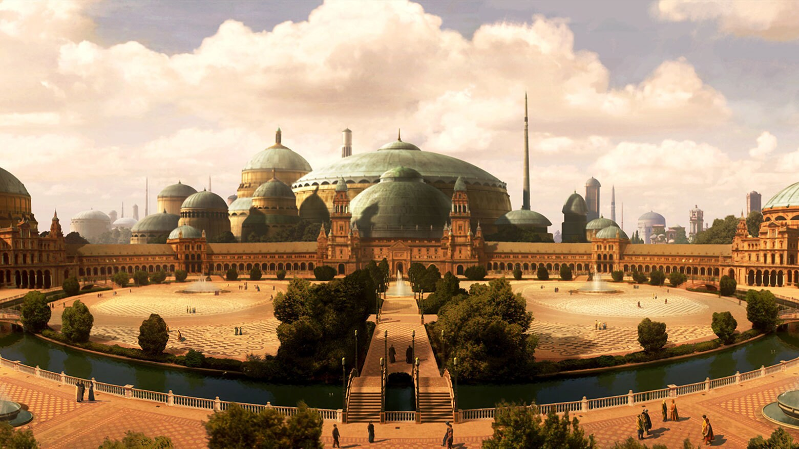
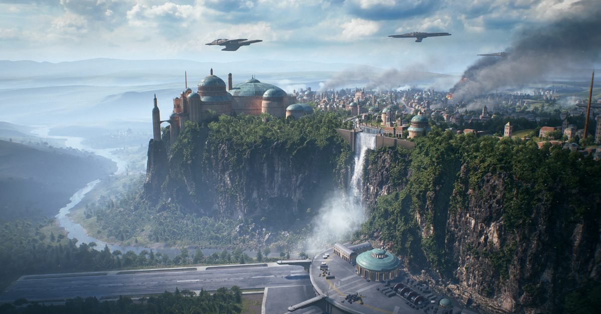
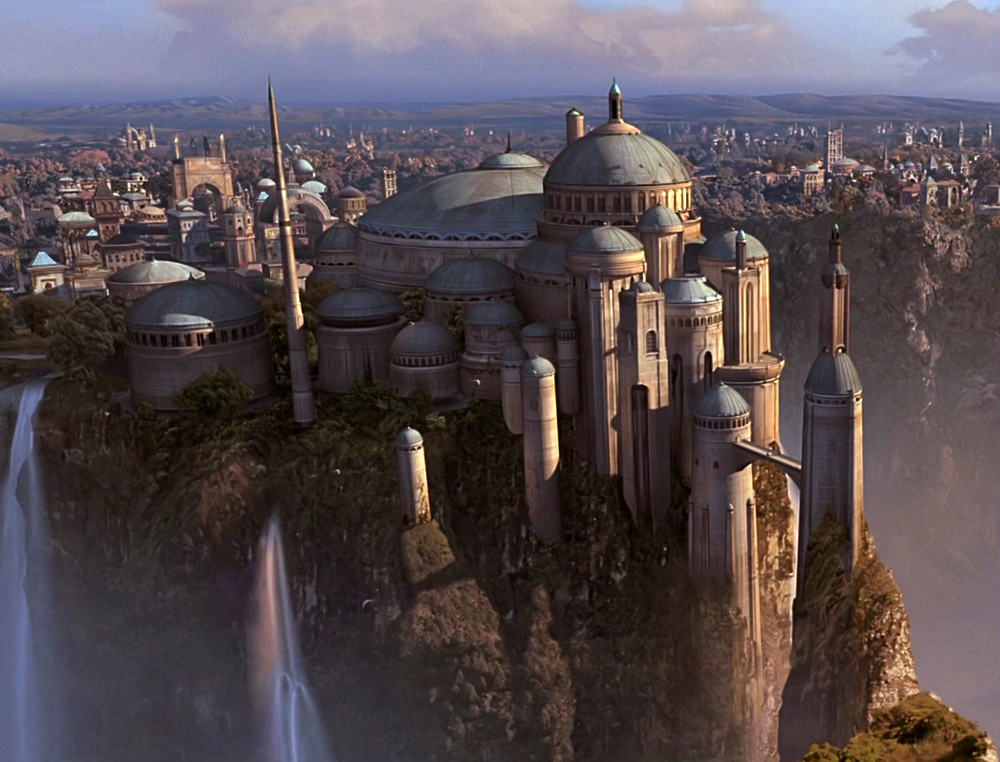

Naboo



A lush, tranquil world of rolling plains, mirror-still lakes, and underwater cities few outsiders ever see. Naboo is known for its elegant architecture, peaceful reputation, and a surprising habit of ending up at the center of galactic history anyway. Popular with travelers seeking scenery over excitement, though we can't promise the excitement won't find you.